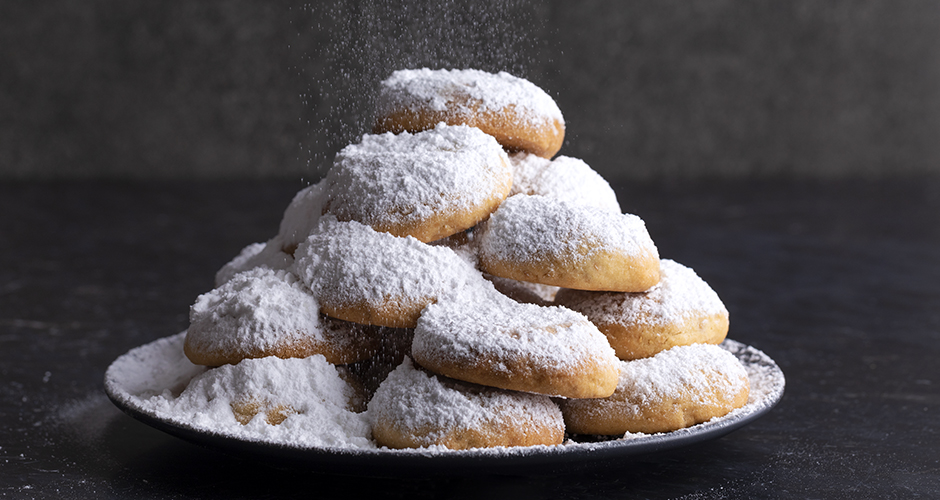

Kourabiedes recipe

Description
Traditional Christmas cookies from Greece with roasted almond , little bit of rose water and a lot of icing sugar !
Ingredients
- 500 butter, at room temperature
- 220g icing sugar
- 1g vanilla powder
- 1 teaspoon rosewater
- 30g bitter almond liqueur, or brandy or rum
- 200-280g almond slivers, or coarsly chopped, unsalted and toasted
- 900g all purpose flour
- 1 pinch salt
Steps
- Preheat the oven to 180°C set to fan
- In a mixer’s bowl add the butter, the icing sugar, and beat with the paddle attachment at high speed, for 10-15 minutes, until the mixture is fluffy and white.
- Add the vanilla powder, the rosewater, the bitter almond liqueur, and keep beating. Remove the bowl from the mixer.
- Break down the almond slivers with your hands, in order to crumble them, and add them to a bowl. Add the flour, the salt, and put them in the mixer’s bowl.
- Mix the mixture with a serving spoon, very softly so that it does not lose its volume. As soon as the ingredients are homogenized, mix with your hands.
- Shape balls, 30 g each, and transfer to a baking pan lined with parchment paper. Lightly press the center with your finger and bake for 20-25 minutes. Follow the same process for the whole mixture.
- Put a layer of the almond snowballs on a serving platter, spray with rosewater, and dust with icing sugar. Follow the same process for all of the snowballs and serve.